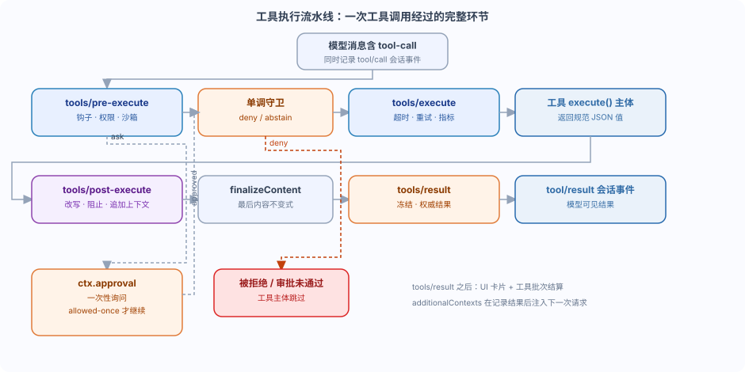

DeepSeek Harness Tool Execution Pipeline and Permission Gate
In the previous chapters, we learned how to use defineTool to register tools, and also learned how to use the event system to listen to various extension points.
But now there is a question: after the model issues a tool call, until the tool actually executes and the result returns to the model, what steps actually happen in between?
In this chapter, we will explain dsh's "tool execution pipeline" in detail, and how to implement permission gates with hook plugins.
In one sentence: a tool call passes through multiple stages in a fixed order, each stage is responsible for one category of policy, and hook plugins can allow, deny, or ask within them.
The overall order of the pipeline
Tool execution is not as simple as "calling a function"; it is a pipeline with a fixed order.
The official documentation summarizes the order as:tools/pre-execute → Monotonic guard → tools/execute → tools/post-execute → finalizeContent → tools/result。
Among them, the first three waterfalls can rewrite a call once, while finalizeContent and tools/result, controlled by the definition itself, run after them.

First, let's look at two concepts that are easily confused:
waterfall(Waterfall event) is an event dispatch pattern; listeners cannext()delegate the decision authority onward, or directly return a decision to short-circuit.
Monotonic guard(Monotonic guard) is a final line of defense that only allows tightening, never revocation.
Below we explain each step one by one.
tools/pre-execute: a reorderable policy layer
tools/pre-executeIt is the first waterfall in the pipeline, responsible for carrying reorderable policies such as "hooks, permissions, sandbox."
The reason it is called "reorderable" is that listeners cannext()pass the decision authority to the next listener, and the order of multiple policy plugins can be adjusted in configuration.
This waterfall returns a typed decisionPreToolDecisionThere are three possible values:
| Decision | Meaning | Subsequent behavior |
|---|---|---|
{ kind: 'allow' } | Allow this call | Continue with the monotonic guard and subsequent steps. |
{ kind: 'deny'; reason: string } | Reject this call | It is materialized into an error result, and the tool body is skipped. |
{ kind: 'ask'; reason?: string } | Ask the user | Only when the approval service returnsallowed-onceThen continue, otherwise reject. |
NoteaskBranch: it will triggerctx.approvalas a one-time inquiry; this part will be left for the next article.
Parameters cannot be modified, because history records, audit, UI, and execution must stay consistent.
When to use pre-execute?
When a policy needs one of the three actions — "allow, deny, or ask" — and policies should be freely orderable, use it.
Plugins such as sandbox, permission, and plan-mode all use this extension point.
Monotonic guard: an irrevocable final rejection.
The disadvantage of waterfall is that listeners registered later can overturn the decisions of earlier listeners.
When an invariant requires "final denial, and no one can revoke it," usectx.tools.guard()。
The type of guard isToolGuardIt deliberately has no allow result: returning a string indicates rejection, returningundefinedIndicates maintaining the status quo.
// ToolGuard：感知作用域的最终预分派策略 type ToolGuard = (execution: Readonly<ToolExecution>) => string | undefined
Because the guard has no allow result, the order of listeners can never turn a rejection back into an approval.
This is what "monotonic" means: only decrease, never increase; only revoke permissions, never grant them.
Practical principles: Place reorderable policies here.tools/pre-execute; invariants that must be "final and irrevocable" go intoctx.tools.guard()。
tools/execute and tools/post-execute
tools/executeIt is responsible for "around dispatch," that is, wrapping the actual invocation of the tool body.
Timeout, retry, and metrics collection are all handled at this layer; what it wraps is the actual dispatch lifecycle.
The view it obtains isToolDispatchExecution: only this view can replace the requiredexec.signal, used to impose a deadline.
The replacement rule is: it can be replaced, but not removed; the registry will re-merge the caller's signal before invoking the tool body.
tools/post-executeIt is responsible for checking or rewriting after the tool execution and before result normalization; it returnsPostToolDecision：
| Decision | Meaning |
|---|---|
{ kind: 'accept'; content? } | Accept the result, can replace the displayed content (retaining canonical value and metadata). |
{ kind: 'accept'; value } | Accept the result, can replace the canonical value (will re-validate and recompute content). |
{ kind: 'block'; feedback } | Block the result, turning corrective feedback into an error result. |
Content replacement is a display policy, not a confidentiality policy.
To hide a programmatic value, you must replace that value or block the result.
finalizeContent and tools/result
finalizeContentIt is a callback owned by the ToolDefinition itself, and the registry calls it exactly once.
It is the "last content-only invariant": executed synchronously, allowing only final corrections at the content level.
After this, the registry materializes and freezes the accepted result, then triggerstools/result。
tools/resultIt is a synchronous notification, used for observation.Frozen, immutable authoritative result。
Observers cannot transform the result, and observer failures are isolated, not affecting the main flow.
Use it when you need "audit, metrics, capturing the final result"; use it only when you need to "transform the result or attach context".tools/post-execute。
Memory aid for selection: pre-execute decides "whether it can be done", execute decides "how to do it", post-execute decides "how the result is presented", result is only responsible for "a glance at the final result".
Hands-on example: write a permission gate plugin.
The official documentation uses "permission gate" as an example to show how hook plugins usetools/pre-execute。
Hook plugins are ordinary Cordis plugins and do not require an external protocol.
Example
// A permission gate plugin based on tools/pre-execute.
// It returns a typed decision: deny if blacklisted, otherwise call next() to delegate.
import type { Context } from '@deepseek-ai/cordis'
import type { PreToolDecision, ToolExecution } from '@deepseek-ai/dsh-tools'
// Blacklist: tools that are forbidden to directly write to the file system in the runoob project.
// Here we use a simple set for demonstration; in real projects you can query a database or consult an approval service.
const DENY_TOOLS = new Set(['fs_write', 'fs_edit'])
// Policy decision function: returns whether this call is allowed.
// exec carries an immutable call identity (callId, name, arguments, agent, token, signal).
async function isAllowed(exec: ToolExecution): Promise<boolean> {
if (DENY_TOOLS.has(exec.name)) return false
// Additional example: in the runoob demo, modifying .env files is forbidden (arguments are frozen before entering the policy).
const raw = exec.arguments as { path?: string }
if (typeof raw.path === 'string' && raw.path.includes('.env')) return false
return true
}
export const name = 'permission-gate'
export function apply(ctx: Context) {
// tools/pre-execute is waterfall: listeners can return a decision, or call next() to delegate.
ctx.on('tools/pre-execute', async (exec, next): Promise<PreToolDecision> => {
if (!(await isAllowed(exec))) {
// Returning deny will immediately terminate this call; subsequent listeners will not be executed.
return { kind: 'deny', reason: 'Denied by policy: this tool is not allowed in the runoob workspace.' }
}
// pass through: hand over the decision to subsequent listeners in the pipeline.
return next()
})
}
After this plugin is loaded, every tool call made by the model will pass through it first.
A tool that hits the blacklist will get an error result with a reason, and the tool body is skipped.
Because it returns a typed decision, other policy plugins can still continue to participate in the decision after it.
Hands-on example: adding a timeout with tools/execute
Timeout belongs to the "around dispatch" concern and should be wrapped withtools/execute, rather than written into the tool body.
Example
// Use tools/execute to wrap the actual dispatch lifecycle: add a 30-second timeout to each tool call.
import type { Context } from '@deepseek-ai/cordis'
export const name = 'tool-guard'
export function apply(ctx: Context) {
// tools/execute is waterfall: must call next() to execute the actual tool body.
ctx.on('tools/execute', async (exec, next) => {
// Note: Only the tools/execute view can replace exec.signal.
// Here, the caller's signal is combined with a 30-second deadline, overriding the original signal.
const originalSignal = exec.signal
const deadline = AbortSignal.timeout(30_000)
exec.signal = AbortSignal.any([originalSignal, deadline])
try {
// Delegate to the actual tool execute(); timeout or caller cancellation will trigger abort.
return await next()
} finally {
// Restore the original signal after use to avoid polluting subsequent calls.
exec.signal = originalSignal
}
})
}
Rule: exec.signal can be replaced, but cannot be removed.
The registry will re-merge the caller's signal before invoking the tool function body, so it is safe for the wrapper layer to replace the signal.
Hands-on example: monotonic rejection with ctx.tools.guard()
When an invariant requires "final denial, irrevocable," usectx.tools.guard()。
Note that the guard's return type isstring | undefined, there is no allow branch.
Example
// An irrevocable final rejection: prohibits executing run_code in the runoob demo environment.
import type { Context } from '@deepseek-ai/cordis'
export const name = 'invariant-guard'
export function apply(ctx: Context) {
// Register a monotonic guard. Returning a string means rejection; returning undefined means no change.
const disposer = ctx.tools.guard((execution) => {
if (execution.name === 'run_code') {
return 'run_code is disabled in the runoob demo profile.'
}
return undefined // Pass through: keep the pre-execute decision unchanged
})
// guard() returns a precise cleanup function; the framework automatically calls it when the plugin is unloaded.
ctx.effect(() => disposer)
}
Because the guard has no allow result, even if a later listener wants to allowrun_code, it cannot turn this rejection back into an approval.
Summary self-test
The tool execution pipeline decouples "policies" from the "tool body," allowing hooks to span different tool families without coupling tools to a specific policy service.
Self-test questions:
| Problem | Reference |
|---|---|
| If you want a tool to be "never approvable by anyone," should you use pre-execute or guard? | guard, because the guard has no allow result, it is irrevocable. |
| To add a unified timeout to all tools, which event should you listen to? | tools/execute, it wraps dispatch and can replace signal |
| If you only want to record the final result for auditing without changing anything, which step should you use? | tools/resultIt observes the frozen authoritative result |